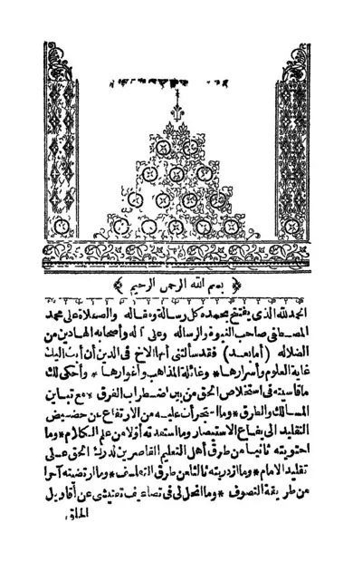

المنقذ من الضلال
Al-Munqidz min adh-Dhalal
Baca Al-Munqidz min adh-Dhalal (المنقذ من الضلال) karya Imam al-Ghazali secara gratis di Maktabah Ilmu: teks Arab, Indonesia, Inggris (sebagian terjemah dibuat AI). Tanpa daftar, tanpa iklan.
Buka kitab iniLihat lemari ilmuDaftar isi
- بسم الله الرحمن الرحيم
- مدخل السفسطة وجحد العلوم
- 2 -
- 3 -
- 4 -
- الفلسفة
- علم الكلام مقصوده وحاصله
- أصناف الفلاسفة وشمول وصمة الكفر كافتهم
- الدهريون
- الطبيعيون
- الصنف الأول
- والصنف الثاني
- والصنف الثالث
- 2 -
- 3 -
- أقسام علومهم
- 3 -
- 4 -
- 2 -
- 3 -
- 5 -
- 6 -
- 1 -
- 2 -
- مذهب التعليم وغائلته
- طرق الصوفية
- حقيقة النبوة واضطرار كافة الخلق إليها
- سبب نشر العلم بعد الإعراض عنه
- 2 -
- 3 -
- 4 -